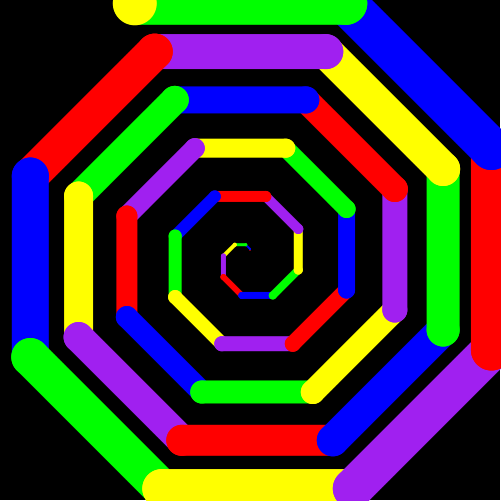
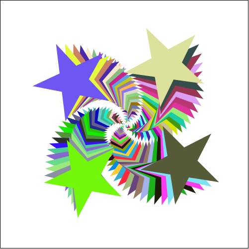

6.2.1
4.5 Racket Turtle esimerkkejä, joissa on käytetty rekursiota
4.5.1 Kiertyvä spiraali vaihtuvalla kynän värillä
Rekursiivisesti rakennettu spiraali, jossa Turtle kulkee kierros kierrokselta pidemmän matkan ja vaihtaa kynän väriä automaattisesti.
(define VÄRIT1 (list "red" "green" "yellow" "purple")) (define (spiraali k p kerrat) (if (< kerrat 0) empty (append (list (forward p)(turn-left k)) (spiraali k (+ p 2)(sub1 kerrat))))) (define spiraalikuvio (list (change-pen-size 2) (change-bg-color "black") (change-color VÄRIT1) (spiraali 91 1 152)))
> (draw spiraalikuvio)
4.5.2 Spiraali vaihtuvilla väreillä ja kynän paksuudella
Rekursiivisesti rakennettu spiraali, jossa Turtle kulkee kierros kierrokselta pidemmän matkan, kynän väri vaihtelee automaattiseseti ja kynän paksuus kasvaa kierrosten mukana.
(define VÄRIT2 (list "red" "blue" "green" "yellow" "purple")) (define (sivu p l k) (list (change-pen-size l)(forward p)(turn-left k))) (define (levenevä-spiraali2 p l k kerrat) (if (<= kerrat 0) empty (cons (sivu p l k) (levenevä-spiraali2 (+ p 5) (+ l 1) k (sub1 kerrat))))) (define levenevä-spiraali (list (change-bg-color "black") (change-color VÄRIT2) (levenevä-spiraali2 1 1 45 45)))
> (draw levenevä-spiraali) 
4.5.3 Spiraali, joka rakentuu eri värisistä ja kokoisista kukista
Leimasimen avulla toteutettu rekursiivinen kukkaspiraali. Kukkien väri vaihtuu satunnaisesti.
(define (lehti koko väri) (ellipse (* 8 koko) koko "solid" väri)) (define (lehdet koko väri) (overlay (lehti koko väri) (rotate 90 (lehti koko väri)))) (define (tee-kukka koko väri) (overlay (circle (/ koko 2) "solid" "white") (lehdet koko väri) (rotate 45 (lehdet koko väri)))) (define (kukka-spiraali k p kerrat) (if (< kerrat 0) empty (append (list (forward p)(turn-left k)) (kukka-spiraali k (+ p 6)(sub1 kerrat))))) (define (tee-kukat määrä koko) (if (<= määrä 0) empty (cons (rotate koko (tee-kukka koko (make-color (random 255) (random 255) (random 255)))) (tee-kukat (sub1 määrä)(add1 koko))))) (define kukkaspiraali (list (stamper-on (tee-kukat 20 1)) (pen-up) (kukka-spiraali 25 1 20)))
> (draw kukkaspiraali)
4.5.4 Spiraali, joka rakentuu eri värisistä ja kokoisista tähdistä
Leimasimen avulla toteutettu rekursiivinen tähtispiraali. Tähtien väri vaihtuu satunnaisesti.
(define (tee-tähdet määrä koko) (if (<= määrä 0) empty (cons (rotate koko (star koko "solid" (make-color (random 255) (random 255) (random 255)))) (tee-tähdet (sub1 määrä)(add1 koko))))) (define tähtispiraali (list (stamper-on (tee-tähdet 100 1)) (pen-up) (spiraali 91 1 100)))
> (draw tähtispiraali) 